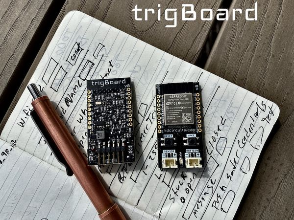

trigBoard v8¶
The trigBoard is an extremely low power platform for the ESP32 WiFi+Bluetooth Module. This board is perfect for battery powered applications, due to it’s single digit uA standby current draw ~1.5uA with a 3V battery input. To give an idea as to how low this current draw is, a cheap smoke detector pulls about 7uA. This board was initially designed to be the ideal IoT device - a WiFi connected battery powered monitoring solution for dry contacts (door/window sensors), where a push notification is immediately sent when the contact state has changed. The ultra low standby current does not change regardless if the contact remains in the closed/opened state (this is part of the secret sauce in the trigBoard design). But of course, the trigBoard is a playground of low power features, so it can easily be adapted to a unique monitoring application:
- Many battery options, with input voltage range from 1.8-5V. Great for two AAA batteries or even a rechargeable Lithium cell at 4.2V. Reverse polarity protection built in, so no issues if batteries are plugged in backwards. See Battery Page for more information and calculations
- Multiple wake sources all configurable through software (no solder jumpers)
- Dry contact trigger input supporting BOTH contact OPEN and contact CLOSE, but configurable for either or both, so if for example a garage door was monitored, a push notification could go out for when the garage opens AND when the garage closes.
- The board utilizes an actual RTC (Real Time Clock). This is a high quality RTC, so accurate wake times can be configured. The timer wakes the board up at the configured time - for example once and hour, then checks the battery voltage and if low, will send out a push notification. The timer can also be used to check the current status of the contact and send out a notification, so in the garage door example, the board can be configured to not only send out notifications when the door opens/closes, but also when the garage is left open for some period of time after the door was opened.
- Wake button on board can also be used to send out a push notification.
- Unused pins from ESP32 broken out for future expansion and in-line to fit breadboards - developer friendly. See Pinout page for more information
- Base Firmware supports many Push Notification service options like Pushsafer, Pushover, and IFTTT. And even develop a custom solution with MQTT and UDP messaging. Any of these can be enabled, or even multiple. For example, the notifications can go out through Pushover, then a secondary backup notification can go through MQTT. Or even a notification though Pushsafer, then turn the lights on in the house with IFTTT. The possibilities are endless with this.
- Configurator Tool gives full control over the board parameters and settings - in a nice clean easy to use GUI through Google Chrome and a Bluetooth connection to the ESP32.
- Made in the USA
- ESP32 Module is FCC Certified and trigBoard has been scanned independently
Mentions¶
- hackster.io KD Circuits’ New trigBoard v8 Marks a Major Overhaul of the Flexible IoT Notification Board
Contents¶
trigBoard v8 Docs